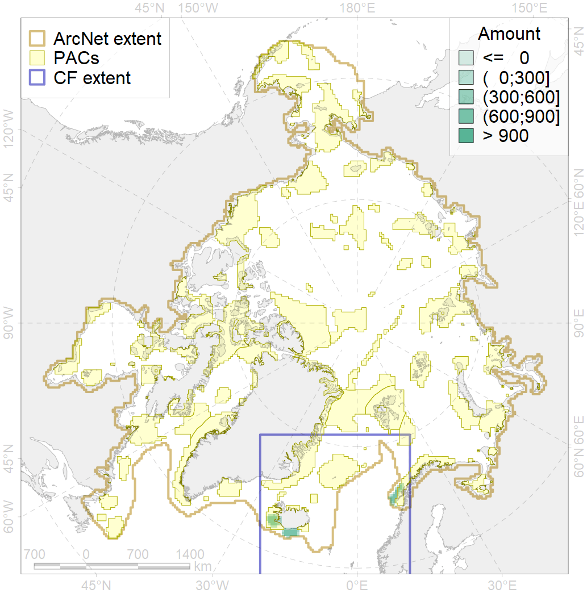
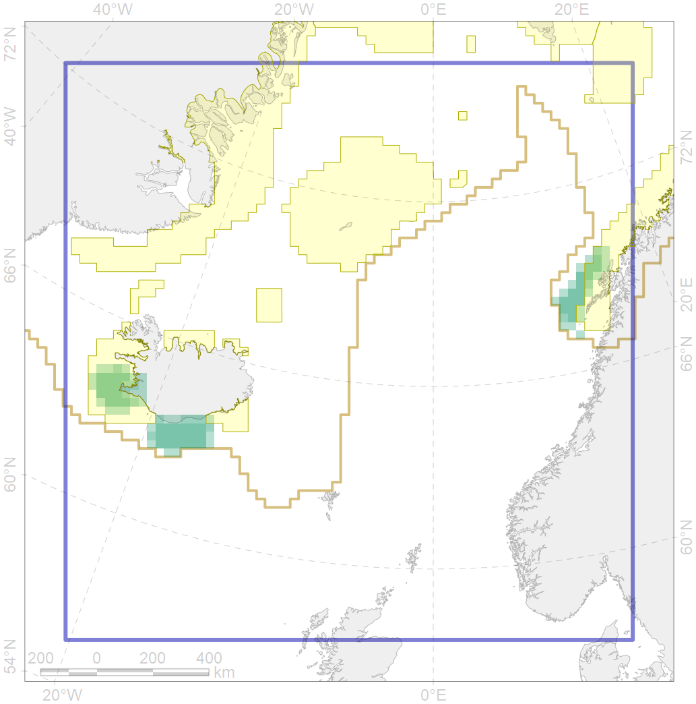

4069

| CF ID | 4069 |
| CF Name | Spawning areas of the Atlantic herring (Clupea harengus) |
| Time Period | 1940s-2010s |
| Source(s) | Dragesund O., Johannessen A., Ulltang Ø. 1997. Variation in migration and abundance of Norwegian spring spawning herring (Clupea harengus L.) // Sarsia (Bergen) 82: 97-105 |
| Seasonality | March |
| Depth Horizon | 50-150 m |
| Methodology | Compiled from literature sources based on field observations |
| Author Name | N. Chernova |
| Notes | |
| Conservation Target Set in the Scenario | 0.06 |
| Conservation Target Achieved in the Scenario | 0.400 (Scenario: 666.6%) |
| PAC ID | Proportion in the PAC | Contribution to ArcNet Target Achievement | PAC’s Contribution to the Achieved Target |
|---|---|---|---|
| 27 | 10.9% | 157.7% | 23.7% |
| 38 | 29.9% | 443.2% | 66.5% |
| 39 | 0.0% | 0.3% | 0.0% |
| inner | 40.9% | 601.2% | 90.2% |
| outer | 59.1% | 65.4% | 9.8% |